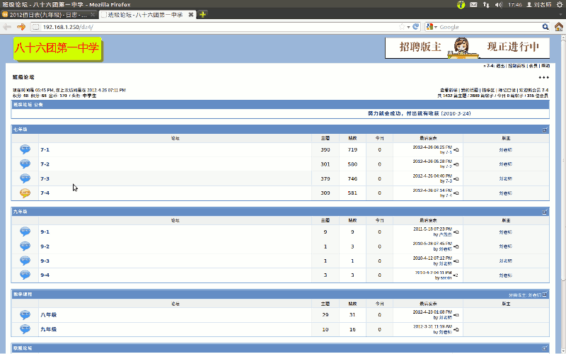

2011-2012 第二学期七年级文字处理和网页教学设计
作者：TeliuTe 来源：基础教程网
十九、 返回目录 下一课
（一）教学设计
1、学习目标：学会上传作业
2、注意事项：两节课的内容自己把握好，写一篇作文上来。
3、教学过程：
1）教师准备学案和板书；
2）学生整队进入，开机抄黑板上笔记；
3）教师讲解板书演示操作；
4）学生打指法、日志、完成操作；
5）教师打勾记录学生指法成绩，检查日志和操作；
注：学生抄完笔记就开始打指法、日志，老师讲完后再继续完成；
（二）板书设计(学生笔记)
第19课 学会上传作业
1、进入writer，打开18课，另存为19课
2、把作文打完保存好，关闭
3、打开主文件夹、7-4，瞄准19课点右键、压缩、7z
4、打开火狐、班级论坛、登录 7-1(把其他的删除)
5、进入7-4班级，点发表新帖，从上到下
6、标题、内容写 ×××的作业，浏览 19.7z，发新话题
操作图示：

（三）课后记
本来想用空间上传，但是普通上传火狐用不成，批量上传只有图片格式
改用dz4的论坛，好久没用，交作业可以，注册7-1~7-4账号，增加7z附件类型
--
压缩容易忘记选7z，上传出错多，登录密码输成空间的了，忘记浏览附件的
快的很快就做完了，上次旷课的这次要补得多一些，这次还有旷的
--
讲的口干舌燥，原因是前面讲的后面都忘记了
然后又没写日志，这样出错的概率就高，得重新设计一下日志
--
下周开始学网络，文字处理就算告一段落
实在跟不上的也只好慢慢耗着吧，自己没信心学了又管不住玩的心
返回目录 下一课
本教程由86团学校TeliuTe制作|著作权所有
基础教程网：http://teliute.org/
美丽的校园……
转载和引用本站内容，请保留版权信息和本站链接。